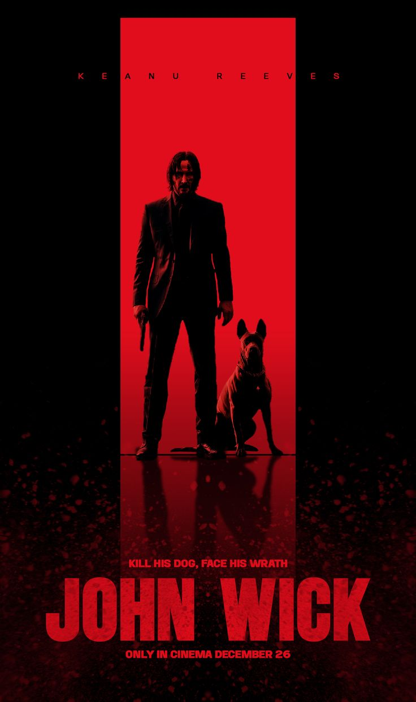
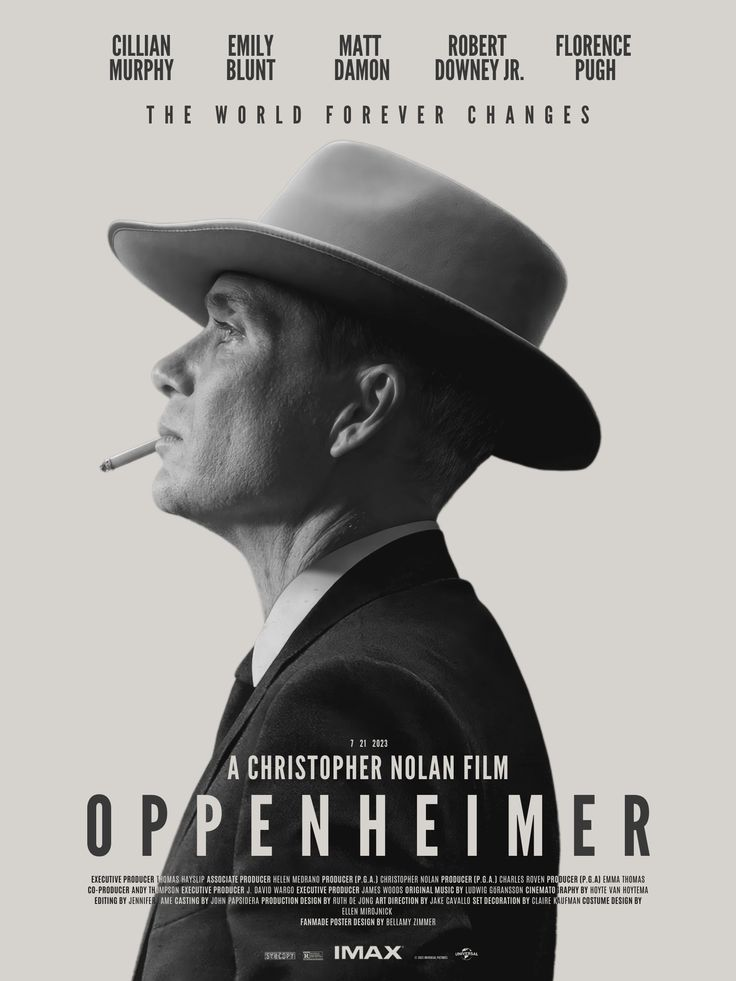
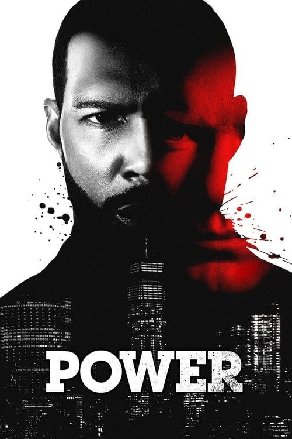

Ces 3 films sont de type DRAMA, POWER GHOST explore le monde de la criminalite tant dis que JHON WEEK lui nous amene dans les coulise des organisation mafieux et de familles puissants. le dernier lui ,parle de la science precisement comment s'est creer la bombe nucleaire

J'aime ce film parce qu'il y a beaucoup d'action et de stratégie.
"Fiche Wikipédia
Je me suis interessee a ce film car sa parlais de experience physique et surtout de comment la bombe nucleaire a ete creer
Fiche Wikipedia
j'aime trop cette serie sa parle de trafic, de pouvoir et strategie, d'assomption et de reussite
Fiche Wikipedia